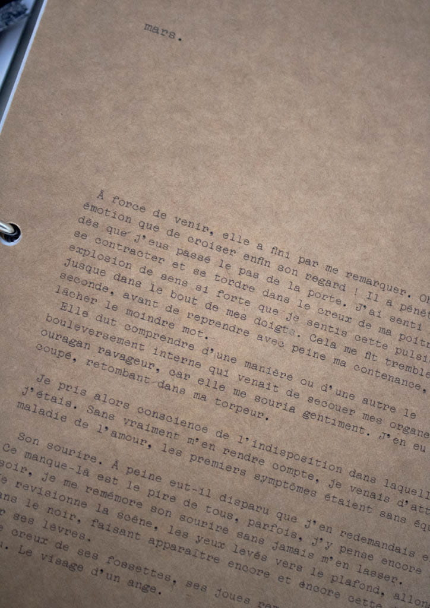
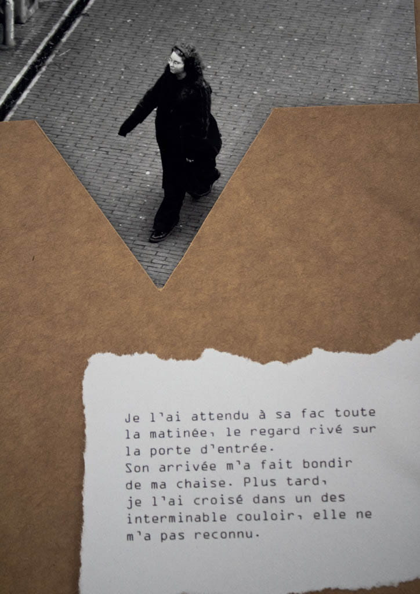
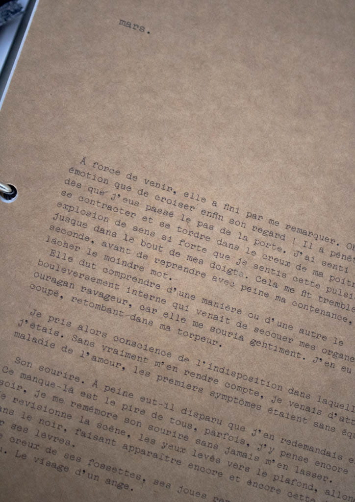
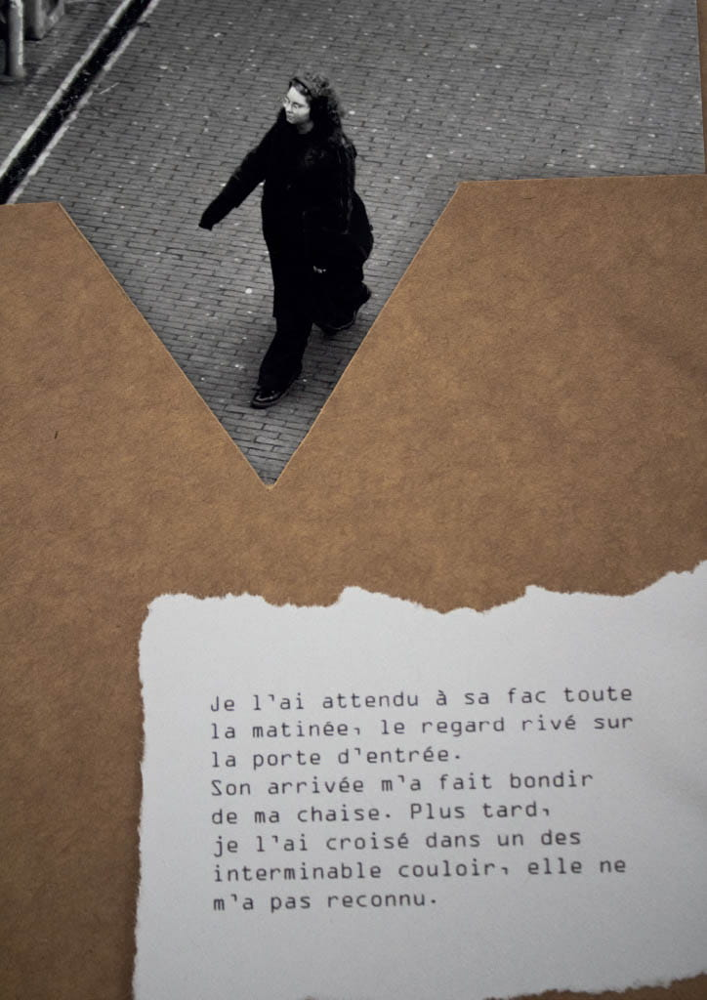
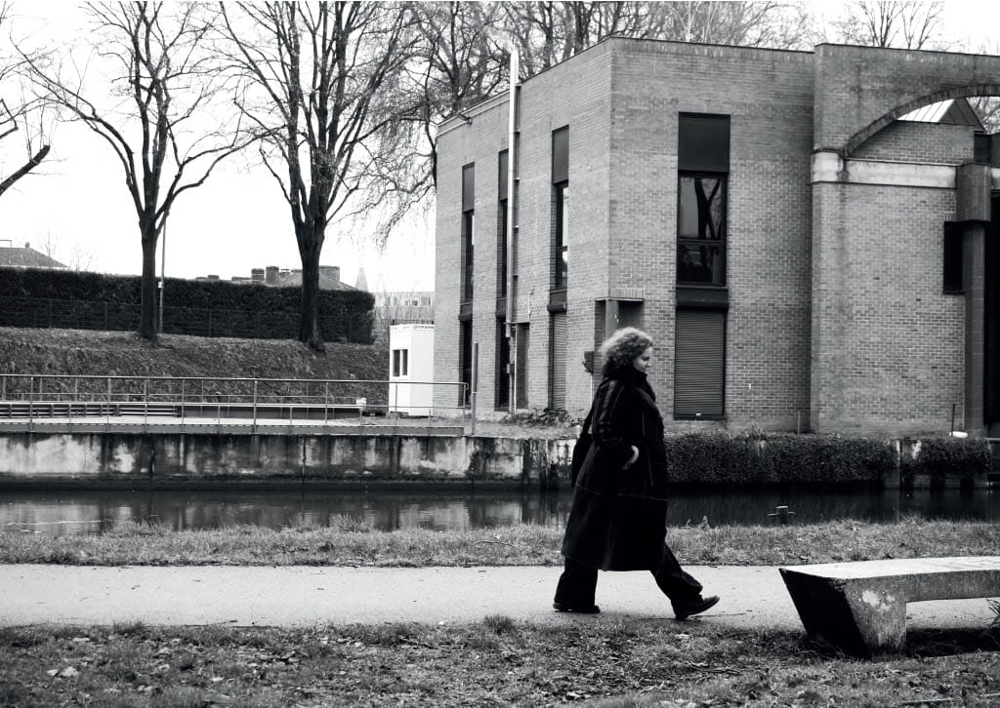
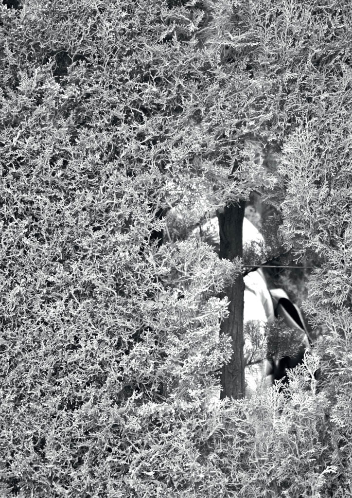
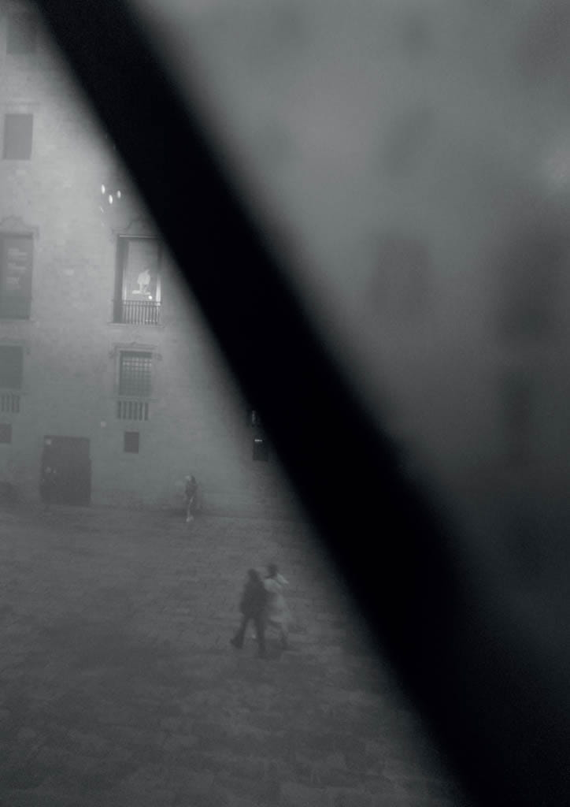
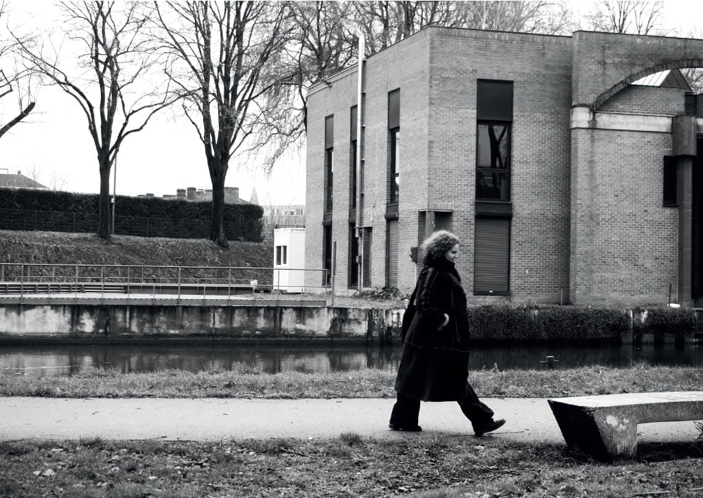
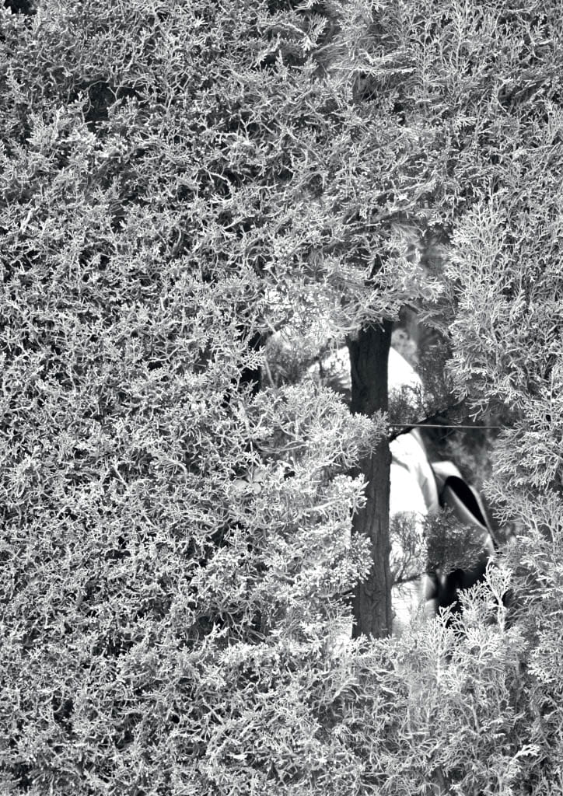
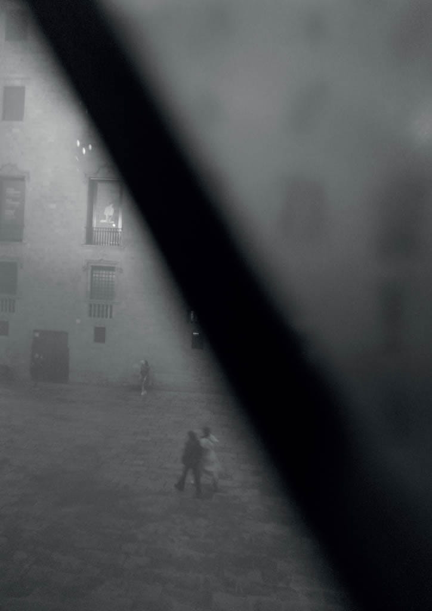

Proof that God loves me
PROOF THAT GOD LOVES ME
Pour ce travail d’écriture et de mise en page, j’ai voulu travailler sur
l’érotomanie. Il s’agit d’un trouble psychologique caractérisé par la conviction
d’être aimé par une personne, le plus souvent célèbre ou inacessible. Au delà
d’une simple obsession pour un amour non réciproque, c’est une forme de psychose
paranoïaque classé parmi les délires, qui peut conduire à des comportements
envahissants comme le harcèlement, la violence et dans certains cas amener au
meurtre ou au suicide.
Le but avec cet édition était donc de créer une fiction en me mettant à la place
d’une personne érotomane qui tenterait de rassembler des preuves que l’autre l’aime.
Un des aspects important dans l’érotomanie est celui de preuves. Il y a un besoin
constant de confirmer, prouver cet amour supposé en interprétant chaque geste, mot
ou interaction avec l’objet. J’ai donc utilisé cet aspect là pour mettre en forme
mon édition, inspiré quelque peu des documents top secret de la police. Je voulais
un résultat assez brouillon, sens dessus-dessous tout en gardant une cohérence avec
une trame principale de l’histoire qui se distingue du reste.
Pour ce qui est du titre de mon édition,
j’ai voulu jouer à mettre en avant le côté
de «preuves irréfutables» de ce soi-disant
amour. Aussi, dans l’érotomanie, l’être
aimé devient une figure presque sacrée,
un objet de vénération autour duquel
s’organise toute l’existence.
C’est une obsession qui prend la forme
d’un culte. L’individu idéalisé est
placé sur un piédestal et perçu comme
exceptionnel et inatteignable, d’où le
rappel à Dieu.
2025
 



 




